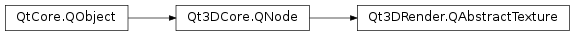

Qt3DRender.QAbstractTexture¶
Inherited by: Qt3DRender.QTexture1DArray, Qt3DRender.QTexture2D, Qt3DRender.QTexture2DArray, Qt3DRender.QTexture3D, Qt3DRender.QTextureCubeMap, Qt3DRender.QTextureCubeMapArray, Qt3DRender.QTexture2DMultisample, Qt3DRender.QTexture2DMultisampleArray, Qt3DRender.QTextureRectangle, Qt3DRender.QTextureBuffer, Qt3DRender.QTextureLoader, Qt3DRender.QTexture1D
Synopsis¶
Functions¶
- def
addTextureImage(textureImage) - def
comparisonFunction() - def
comparisonMode() - def
dataGenerator() - def
depth() - def
format() - def
generateMipMaps() - def
height() - def
layers() - def
magnificationFilter() - def
maximumAnisotropy() - def
minificationFilter() - def
removeTextureImage(textureImage) - def
samples() - def
setSize(width[, height=1[, depth=1]]) - def
setStatus(status) - def
setWrapMode(wrapMode) - def
status() - def
target() - def
textureImages() - def
width() - def
wrapMode()
Slots¶
- def
setComparisonFunction(function) - def
setComparisonMode(mode) - def
setDepth(depth) - def
setFormat(format) - def
setGenerateMipMaps(gen) - def
setHeight(height) - def
setLayers(layers) - def
setMagnificationFilter(f) - def
setMaximumAnisotropy(anisotropy) - def
setMinificationFilter(f) - def
setSamples(samples) - def
setWidth(width)
Signals¶
- def
comparisonFunctionChanged(comparisonFunction) - def
comparisonModeChanged(comparisonMode) - def
depthChanged(depth) - def
formatChanged(format) - def
generateMipMapsChanged(generateMipMaps) - def
heightChanged(height) - def
layersChanged(layers) - def
magnificationFilterChanged(magnificationFilter) - def
maximumAnisotropyChanged(maximumAnisotropy) - def
minificationFilterChanged(minificationFilter) - def
samplesChanged(samples) - def
statusChanged(status) - def
widthChanged(width)
Detailed Description¶
A base class to be used to provide textures.
The
QAbstractTextureclass shouldn’t be used directly but rather through one of its subclasses. Each subclass implements a given texture target (2D, 2DArray, 3D, CubeMap …) Each subclass provides a set of functors for each layer, cube map face and mipmap level. In turn the backend uses those functor to properly fill a corresponding OpenGL texture with data.
-
class
PySide2.Qt3DRender.Qt3DRender.QAbstractTexture([parent=nullptr])¶ -
class
PySide2.Qt3DRender.Qt3DRender.QAbstractTexture(target[, parent=nullptr]) Parameters: - parent –
PySide2.Qt3DCore.Qt3DCore::QNode - target –
PySide2.Qt3DRender.Qt3DRender::QAbstractTexture.Target
The constructor creates a new
QAbstractTexture.QAbstractTextureinstance with the specifiedparent.The constructor creates a new
QAbstractTexture.QAbstractTextureinstance with the specifiedtargetandparent.- parent –
-
PySide2.Qt3DRender.Qt3DRender.QAbstractTexture.Status¶ Contains the status of the texture provider.
Constant Description Qt3DRender.QAbstractTexture.None Qt3DRender.QAbstractTexture.Loading Qt3DRender.QAbstractTexture.Ready Qt3DRender.QAbstractTexture.Error
-
PySide2.Qt3DRender.Qt3DRender.QAbstractTexture.Target¶ Constant Description Qt3DRender.QAbstractTexture.TargetAutomatic Target will be determined by the Qt3D engine Qt3DRender.QAbstractTexture.Target1D GL_TEXTURE_1D Qt3DRender.QAbstractTexture.Target1DArray GL_TEXTURE_1D_ARRAY Qt3DRender.QAbstractTexture.Target2D GL_TEXTURE_2D Qt3DRender.QAbstractTexture.Target2DArray GL_TEXTURE_2D_ARRAY Qt3DRender.QAbstractTexture.Target3D GL_TEXTURE_3D Qt3DRender.QAbstractTexture.TargetCubeMap GL_TEXTURE_CUBE_MAP Qt3DRender.QAbstractTexture.TargetCubeMapArray GL_TEXTURE_CUBE_MAP_ARRAY Qt3DRender.QAbstractTexture.Target2DMultisample GL_TEXTURE_2D_MULTISAMPLE Qt3DRender.QAbstractTexture.Target2DMultisampleArray GL_TEXTURE_2D_MULTISAMPLE_ARRAY Qt3DRender.QAbstractTexture.TargetRectangle GL_TEXTURE_RECTANGLE Qt3DRender.QAbstractTexture.TargetBuffer GL_TEXTURE_BUFFER
-
PySide2.Qt3DRender.Qt3DRender.QAbstractTexture.TextureFormat¶ This list describes all possible texture formats
Constant Description Qt3DRender.QAbstractTexture.NoFormat GL_NONE Qt3DRender.QAbstractTexture.Automatic automatically_determines_format Qt3DRender.QAbstractTexture.R8_UNorm GL_R8 Qt3DRender.QAbstractTexture.RG8_UNorm GL_RG8 Qt3DRender.QAbstractTexture.RGB8_UNorm GL_RGB8 Qt3DRender.QAbstractTexture.RGBA8_UNorm GL_RGBA8 Qt3DRender.QAbstractTexture.R16_UNorm GL_R16 Qt3DRender.QAbstractTexture.RG16_UNorm GL_RG16 Qt3DRender.QAbstractTexture.RGB16_UNorm GL_RGB16 Qt3DRender.QAbstractTexture.RGBA16_UNorm GL_RGBA16 Qt3DRender.QAbstractTexture.R8_SNorm GL_R8_SNORM Qt3DRender.QAbstractTexture.RG8_SNorm GL_RG8_SNORM Qt3DRender.QAbstractTexture.RGB8_SNorm GL_RGB8_SNORM Qt3DRender.QAbstractTexture.RGBA8_SNorm GL_RGBA8_SNORM Qt3DRender.QAbstractTexture.R16_SNorm GL_R16_SNORM Qt3DRender.QAbstractTexture.RG16_SNorm GL_RG16_SNORM Qt3DRender.QAbstractTexture.RGB16_SNorm GL_RGB16_SNORM Qt3DRender.QAbstractTexture.RGBA16_SNorm GL_RGBA16_SNORM Qt3DRender.QAbstractTexture.R8U GL_R8UI Qt3DRender.QAbstractTexture.RG8U GL_RG8UI Qt3DRender.QAbstractTexture.RGB8U GL_RGB8UI Qt3DRender.QAbstractTexture.RGBA8U GL_RGBA8UI Qt3DRender.QAbstractTexture.R16U GL_R16UI Qt3DRender.QAbstractTexture.RG16U GL_RG16UI Qt3DRender.QAbstractTexture.RGB16U GL_RGB16UI Qt3DRender.QAbstractTexture.RGBA16U GL_RGBA16UI Qt3DRender.QAbstractTexture.R32U GL_R32UI Qt3DRender.QAbstractTexture.RG32U GL_RG32UI Qt3DRender.QAbstractTexture.RGB32U GL_RGB32UI Qt3DRender.QAbstractTexture.RGBA32U GL_RGBA32UI Qt3DRender.QAbstractTexture.R8I GL_R8I Qt3DRender.QAbstractTexture.RG8I GL_RG8I Qt3DRender.QAbstractTexture.RGB8I GL_RGB8I Qt3DRender.QAbstractTexture.RGBA8I GL_RGBA8I Qt3DRender.QAbstractTexture.R16I GL_R16I Qt3DRender.QAbstractTexture.RG16I GL_RG16I Qt3DRender.QAbstractTexture.RGB16I GL_RGB16I Qt3DRender.QAbstractTexture.RGBA16I GL_RGBA16I Qt3DRender.QAbstractTexture.R32I GL_R32I Qt3DRender.QAbstractTexture.RG32I GL_RG32I Qt3DRender.QAbstractTexture.RGB32I GL_RGB32I Qt3DRender.QAbstractTexture.RGBA32I GL_RGBA32I Qt3DRender.QAbstractTexture.R16F GL_R16F Qt3DRender.QAbstractTexture.RG16F GL_RG16F Qt3DRender.QAbstractTexture.RGB16F GL_RGB16F Qt3DRender.QAbstractTexture.RGBA16F GL_RGBA16F Qt3DRender.QAbstractTexture.R32F GL_R32F Qt3DRender.QAbstractTexture.RG32F GL_RG32F Qt3DRender.QAbstractTexture.RGB32F GL_RGB32F Qt3DRender.QAbstractTexture.RGBA32F GL_RGBA32F Qt3DRender.QAbstractTexture.RGB9E5 GL_RGB9_E5 Qt3DRender.QAbstractTexture.RG11B10F GL_R11F_G11F_B10F Qt3DRender.QAbstractTexture.RG3B2 GL_R3_G3_B2 Qt3DRender.QAbstractTexture.R5G6B5 GL_RGB565 Qt3DRender.QAbstractTexture.RGB5A1 GL_RGB5_A1 Qt3DRender.QAbstractTexture.RGBA4 GL_RGBA4 Qt3DRender.QAbstractTexture.RGB10A2 GL_RGB10_A2UI Qt3DRender.QAbstractTexture.D16 GL_DEPTH_COMPONENT16 Qt3DRender.QAbstractTexture.D24 GL_DEPTH_COMPONENT24 Qt3DRender.QAbstractTexture.D24S8 GL_DEPTH24_STENCIL8 Qt3DRender.QAbstractTexture.D32 GL_DEPTH_COMPONENT32 Qt3DRender.QAbstractTexture.D32F GL_DEPTH_COMPONENT32F Qt3DRender.QAbstractTexture.D32FS8X24 GL_DEPTH32F_STENCIL8 Qt3DRender.QAbstractTexture.RGB_DXT1 GL_COMPRESSED_RGB_S3TC_DXT1_EXT Qt3DRender.QAbstractTexture.RGBA_DXT1 GL_COMPRESSED_RGBA_S3TC_DXT1_EXT Qt3DRender.QAbstractTexture.RGBA_DXT3 GL_COMPRESSED_RGBA_S3TC_DXT3_EXT Qt3DRender.QAbstractTexture.RGBA_DXT5 GL_COMPRESSED_RGBA_S3TC_DXT5_EXT Qt3DRender.QAbstractTexture.R_ATI1N_UNorm GL_COMPRESSED_RED_RGTC1 Qt3DRender.QAbstractTexture.R_ATI1N_SNorm GL_COMPRESSED_SIGNED_RED_RGTC1 Qt3DRender.QAbstractTexture.RG_ATI2N_UNorm GL_COMPRESSED_RG_RGTC2 Qt3DRender.QAbstractTexture.RG_ATI2N_SNorm GL_COMPRESSED_SIGNED_RG_RGTC2 Qt3DRender.QAbstractTexture.RGB_BP_UNSIGNED_FLOAT GL_COMPRESSED_RGB_BPTC_UNSIGNED_FLOAT_ARB Qt3DRender.QAbstractTexture.RGB_BP_SIGNED_FLOAT GL_COMPRESSED_RGB_BPTC_SIGNED_FLOAT_ARB Qt3DRender.QAbstractTexture.RGB_BP_UNorm GL_COMPRESSED_RGBA_BPTC_UNORM_ARB Qt3DRender.QAbstractTexture.R11_EAC_UNorm GL_COMPRESSED_R11_EAC Qt3DRender.QAbstractTexture.R11_EAC_SNorm GL_COMPRESSED_SIGNED_R11_EAC Qt3DRender.QAbstractTexture.RG11_EAC_UNorm GL_COMPRESSED_RG11_EAC Qt3DRender.QAbstractTexture.RG11_EAC_SNorm GL_COMPRESSED_SIGNED_RG11_EAC Qt3DRender.QAbstractTexture.RGB8_ETC2 GL_COMPRESSED_RGB8_ETC2 Qt3DRender.QAbstractTexture.SRGB8_ETC2 GL_COMPRESSED_SRGB8_ETC2 Qt3DRender.QAbstractTexture.RGB8_PunchThrough_Alpha1_ETC2 GL_COMPRESSED_RGB8_PUNCHTHROUGH_ALPHA1_ETC2 Qt3DRender.QAbstractTexture.SRGB8_PunchThrough_Alpha1_ETC2 GL_COMPRESSED_SRGB8_PUNCHTHROUGH_ALPHA1_ETC2 Qt3DRender.QAbstractTexture.RGBA8_ETC2_EAC GL_COMPRESSED_RGBA8_ETC2_EAC Qt3DRender.QAbstractTexture.SRGB8_Alpha8_ETC2_EAC GL_COMPRESSED_SRGB8_ALPHA8_ETC2_EAC Qt3DRender.QAbstractTexture.RGB8_ETC1 GL_ETC1_RGB8_OES Qt3DRender.QAbstractTexture.SRGB8 GL_SRGB8 Qt3DRender.QAbstractTexture.SRGB8_Alpha8 GL_SRGB8_ALPHA8 Qt3DRender.QAbstractTexture.SRGB_DXT1 GL_COMPRESSED_SRGB_S3TC_DXT1_EXT Qt3DRender.QAbstractTexture.SRGB_Alpha_DXT1 GL_COMPRESSED_SRGB_ALPHA_S3TC_DXT1_EXT Qt3DRender.QAbstractTexture.SRGB_Alpha_DXT3 GL_COMPRESSED_SRGB_ALPHA_S3TC_DXT3_EXT Qt3DRender.QAbstractTexture.SRGB_Alpha_DXT5 GL_COMPRESSED_SRGB_ALPHA_S3TC_DXT5_EXT Qt3DRender.QAbstractTexture.SRGB_BP_UNorm GL_COMPRESSED_SRGB_ALPHA_BPTC_UNORM_ARB Qt3DRender.QAbstractTexture.DepthFormat GL_DEPTH_COMPONENT Qt3DRender.QAbstractTexture.AlphaFormat GL_ALPHA Qt3DRender.QAbstractTexture.RGBFormat GL_RGB Qt3DRender.QAbstractTexture.RGBAFormat GL_RGBA Qt3DRender.QAbstractTexture.LuminanceFormat GL_LUMINANCE Qt3DRender.QAbstractTexture.LuminanceAlphaFormat 0x190A
-
PySide2.Qt3DRender.Qt3DRender.QAbstractTexture.Filter¶ Holds the filter type of the texture provider.
Constant Description Qt3DRender.QAbstractTexture.Nearest GL_NEAREST Qt3DRender.QAbstractTexture.Linear GL_LINEAR Qt3DRender.QAbstractTexture.NearestMipMapNearest GL_NEAREST_MIPMAP_NEAREST Qt3DRender.QAbstractTexture.NearestMipMapLinear GL_NEAREST_MIPMAP_LINEAR Qt3DRender.QAbstractTexture.LinearMipMapNearest GL_LINEAR_MIPMAP_NEAREST Qt3DRender.QAbstractTexture.LinearMipMapLinear GL_LINEAR_MIPMAP_LINEAR
-
PySide2.Qt3DRender.Qt3DRender.QAbstractTexture.CubeMapFace¶ This enum identifies the faces of a cube map texture
Constant Description Qt3DRender.QAbstractTexture.CubeMapPositiveX Specify the positive X face of a cube map Qt3DRender.QAbstractTexture.CubeMapNegativeX Specify the negative X face of a cube map Qt3DRender.QAbstractTexture.CubeMapPositiveY Specify the positive Y face of a cube map Qt3DRender.QAbstractTexture.CubeMapNegativeY Specify the negative Y face of a cube map Qt3DRender.QAbstractTexture.CubeMapPositiveZ Specify the positive Z face of a cube map Qt3DRender.QAbstractTexture.CubeMapNegativeZ Specify the negative Z face of a cube map Qt3DRender.QAbstractTexture.AllFaces Specify all the faces of a cube map Note
should only be used when a behavior needs to be applied to all the faces of a cubemap. This is the case for example when using a cube map as a texture attachment. Using in the attachment specfication would result in all faces being bound to the attachment point. On the other hand, if a specific face is specified, the attachment would only be using the specified face.
-
PySide2.Qt3DRender.Qt3DRender.QAbstractTexture.ComparisonFunction¶
-
PySide2.Qt3DRender.Qt3DRender.QAbstractTexture.ComparisonMode¶
-
PySide2.Qt3DRender.Qt3DRender.QAbstractTexture.addTextureImage(textureImage)¶ Parameters: textureImage – PySide2.Qt3DRender.Qt3DRender::QAbstractTextureImageAdds a new Qt3DCore::QAbstractTextureImage
textureImageto the texture provider.Note
Qt3DRender.QAbstractTextureImageshould never be shared between multipleQt3DRender.QAbstractTextureinstances.
-
PySide2.Qt3DRender.Qt3DRender.QAbstractTexture.comparisonFunction()¶ Return type: PySide2.Qt3DRender.Qt3DRender::QAbstractTexture.ComparisonFunctionReturns the current comparison function.
See also
PySide2.Qt3DRender.Qt3DRender::QAbstractTexture.setComparisonFunction()
-
PySide2.Qt3DRender.Qt3DRender.QAbstractTexture.comparisonFunctionChanged(comparisonFunction)¶ Parameters: comparisonFunction – PySide2.Qt3DRender.Qt3DRender::QAbstractTexture.ComparisonFunction
-
PySide2.Qt3DRender.Qt3DRender.QAbstractTexture.comparisonMode()¶ Return type: PySide2.Qt3DRender.Qt3DRender::QAbstractTexture.ComparisonModeReturns the current comparison mode.
See also
PySide2.Qt3DRender.Qt3DRender::QAbstractTexture.setComparisonMode()
-
PySide2.Qt3DRender.Qt3DRender.QAbstractTexture.comparisonModeChanged(comparisonMode)¶ Parameters: comparisonMode – PySide2.Qt3DRender.Qt3DRender::QAbstractTexture.ComparisonMode
-
PySide2.Qt3DRender.Qt3DRender.QAbstractTexture.dataGenerator()¶ Return type: PySide2.QtQuick.QSharedPointerReturns the current data generator.
-
PySide2.Qt3DRender.Qt3DRender.QAbstractTexture.depth()¶ Return type: PySide2.QtCore.intReturns the depth of the texture
See also
PySide2.Qt3DRender.Qt3DRender::QAbstractTexture.setDepth()
-
PySide2.Qt3DRender.Qt3DRender.QAbstractTexture.depthChanged(depth)¶ Parameters: depth – PySide2.QtCore.int
-
PySide2.Qt3DRender.Qt3DRender.QAbstractTexture.format()¶ Return type: PySide2.Qt3DRender.Qt3DRender::QAbstractTexture.TextureFormatReturns the texture provider’s format.
See also
PySide2.Qt3DRender.Qt3DRender::QAbstractTexture.setFormat()
-
PySide2.Qt3DRender.Qt3DRender.QAbstractTexture.formatChanged(format)¶ Parameters: format – PySide2.Qt3DRender.Qt3DRender::QAbstractTexture.TextureFormat
-
PySide2.Qt3DRender.Qt3DRender.QAbstractTexture.generateMipMaps()¶ Return type: PySide2.QtCore.boolSee also
PySide2.Qt3DRender.Qt3DRender::QAbstractTexture.setGenerateMipMaps()
-
PySide2.Qt3DRender.Qt3DRender.QAbstractTexture.generateMipMapsChanged(generateMipMaps)¶ Parameters: generateMipMaps – PySide2.QtCore.bool
-
PySide2.Qt3DRender.Qt3DRender.QAbstractTexture.height()¶ Return type: PySide2.QtCore.intReturns the height of the texture
See also
PySide2.Qt3DRender.Qt3DRender::QAbstractTexture.setHeight()
-
PySide2.Qt3DRender.Qt3DRender.QAbstractTexture.heightChanged(height)¶ Parameters: height – PySide2.QtCore.int
-
PySide2.Qt3DRender.Qt3DRender.QAbstractTexture.layers()¶ Return type: PySide2.QtCore.intReturns the maximum number of layers for the texture provider.
Note
this has a meaning only for texture providers that have 3D or array target formats.
See also
PySide2.Qt3DRender.Qt3DRender::QAbstractTexture.setLayers()
-
PySide2.Qt3DRender.Qt3DRender.QAbstractTexture.layersChanged(layers)¶ Parameters: layers – PySide2.QtCore.int
-
PySide2.Qt3DRender.Qt3DRender.QAbstractTexture.magnificationFilter()¶ Return type: PySide2.Qt3DRender.Qt3DRender::QAbstractTexture.FilterSee also
PySide2.Qt3DRender.Qt3DRender::QAbstractTexture.setMagnificationFilter()
-
PySide2.Qt3DRender.Qt3DRender.QAbstractTexture.magnificationFilterChanged(magnificationFilter)¶ Parameters: magnificationFilter – PySide2.Qt3DRender.Qt3DRender::QAbstractTexture.Filter
-
PySide2.Qt3DRender.Qt3DRender.QAbstractTexture.maximumAnisotropy()¶ Return type: PySide2.QtCore.floatReturns the current maximum anisotropy
See also
PySide2.Qt3DRender.Qt3DRender::QAbstractTexture.setMaximumAnisotropy()
-
PySide2.Qt3DRender.Qt3DRender.QAbstractTexture.maximumAnisotropyChanged(maximumAnisotropy)¶ Parameters: maximumAnisotropy – PySide2.QtCore.float
-
PySide2.Qt3DRender.Qt3DRender.QAbstractTexture.minificationFilter()¶ Return type: PySide2.Qt3DRender.Qt3DRender::QAbstractTexture.FilterSee also
PySide2.Qt3DRender.Qt3DRender::QAbstractTexture.setMinificationFilter()
-
PySide2.Qt3DRender.Qt3DRender.QAbstractTexture.minificationFilterChanged(minificationFilter)¶ Parameters: minificationFilter – PySide2.Qt3DRender.Qt3DRender::QAbstractTexture.Filter
-
PySide2.Qt3DRender.Qt3DRender.QAbstractTexture.removeTextureImage(textureImage)¶ Parameters: textureImage – PySide2.Qt3DRender.Qt3DRender::QAbstractTextureImageRemoves a Qt3DCore::QAbstractTextureImage
textureImagefrom the texture provider.
-
PySide2.Qt3DRender.Qt3DRender.QAbstractTexture.samples()¶ Return type: PySide2.QtCore.intReturns the number of samples per texel for the texture provider.
Note
this has a meaning only for texture providers that have multisample formats.
See also
PySide2.Qt3DRender.Qt3DRender::QAbstractTexture.setSamples()
-
PySide2.Qt3DRender.Qt3DRender.QAbstractTexture.samplesChanged(samples)¶ Parameters: samples – PySide2.QtCore.int
-
PySide2.Qt3DRender.Qt3DRender.QAbstractTexture.setComparisonFunction(function)¶ Parameters: function – PySide2.Qt3DRender.Qt3DRender::QAbstractTexture.ComparisonFunctionSet the comparison function to
function.See also
PySide2.Qt3DRender.Qt3DRender::QAbstractTexture.comparisonFunction()
-
PySide2.Qt3DRender.Qt3DRender.QAbstractTexture.setComparisonMode(mode)¶ Parameters: mode – PySide2.Qt3DRender.Qt3DRender::QAbstractTexture.ComparisonModeSet the comparison mode to
mode.See also
PySide2.Qt3DRender.Qt3DRender::QAbstractTexture.comparisonMode()
-
PySide2.Qt3DRender.Qt3DRender.QAbstractTexture.setDepth(depth)¶ Parameters: depth – PySide2.QtCore.intSet the depth of the texture to
depth.See also
PySide2.Qt3DRender.Qt3DRender::QAbstractTexture.depth()
-
PySide2.Qt3DRender.Qt3DRender.QAbstractTexture.setFormat(format)¶ Parameters: format – PySide2.Qt3DRender.Qt3DRender::QAbstractTexture.TextureFormatSet the texture format to
format.See also
PySide2.Qt3DRender.Qt3DRender::QAbstractTexture.format()
-
PySide2.Qt3DRender.Qt3DRender.QAbstractTexture.setGenerateMipMaps(gen)¶ Parameters: gen – PySide2.QtCore.boolBoolean parameter
gensets a flag indicating whether the texture provider should generate mipmaps or not.See also
PySide2.Qt3DRender.Qt3DRender::QAbstractTexture.generateMipMaps()
-
PySide2.Qt3DRender.Qt3DRender.QAbstractTexture.setHeight(height)¶ Parameters: height – PySide2.QtCore.intSet the height to
height.See also
PySide2.Qt3DRender.Qt3DRender::QAbstractTexture.height()
-
PySide2.Qt3DRender.Qt3DRender.QAbstractTexture.setLayers(layers)¶ Parameters: layers – PySide2.QtCore.intSet the maximum layer count to
layers.See also
PySide2.Qt3DRender.Qt3DRender::QAbstractTexture.layers()
-
PySide2.Qt3DRender.Qt3DRender.QAbstractTexture.setMagnificationFilter(f)¶ Parameters: f – PySide2.Qt3DRender.Qt3DRender::QAbstractTexture.FilterSet the magnification filter to
f.See also
PySide2.Qt3DRender.Qt3DRender::QAbstractTexture.magnificationFilter()
-
PySide2.Qt3DRender.Qt3DRender.QAbstractTexture.setMaximumAnisotropy(anisotropy)¶ Parameters: anisotropy – PySide2.QtCore.floatSets the maximum anisotropy to
anisotropy.See also
PySide2.Qt3DRender.Qt3DRender::QAbstractTexture.maximumAnisotropy()
-
PySide2.Qt3DRender.Qt3DRender.QAbstractTexture.setMinificationFilter(f)¶ Parameters: f – PySide2.Qt3DRender.Qt3DRender::QAbstractTexture.FilterSet the minification filter to the specified value
f.See also
PySide2.Qt3DRender.Qt3DRender::QAbstractTexture.minificationFilter()
-
PySide2.Qt3DRender.Qt3DRender.QAbstractTexture.setSamples(samples)¶ Parameters: samples – PySide2.QtCore.intSet the number of samples per texel to
samples.See also
PySide2.Qt3DRender.Qt3DRender::QAbstractTexture.samples()
-
PySide2.Qt3DRender.Qt3DRender.QAbstractTexture.setSize(width[, height=1[, depth=1]])¶ Parameters: - width –
PySide2.QtCore.int - height –
PySide2.QtCore.int - depth –
PySide2.QtCore.int
Sets the size of the texture provider to width
w, heighthand depthd.- width –
-
PySide2.Qt3DRender.Qt3DRender.QAbstractTexture.setStatus(status)¶ Parameters: status – PySide2.Qt3DRender.Qt3DRender::QAbstractTexture.StatusSet the status of the texture provider to the specified
status.See also
PySide2.Qt3DRender.Qt3DRender::QAbstractTexture.status()
-
PySide2.Qt3DRender.Qt3DRender.QAbstractTexture.setWidth(width)¶ Parameters: width – PySide2.QtCore.intSet the width of the texture provider to
width.See also
PySide2.Qt3DRender.Qt3DRender::QAbstractTexture.width()
-
PySide2.Qt3DRender.Qt3DRender.QAbstractTexture.setWrapMode(wrapMode)¶ Parameters: wrapMode – PySide2.Qt3DRender.Qt3DRender::QTextureWrapModeSet the wrapmode to the value specified in
wrapMode.See also
PySide2.Qt3DRender.Qt3DRender::QAbstractTexture.wrapMode()
-
PySide2.Qt3DRender.Qt3DRender.QAbstractTexture.status()¶ Return type: PySide2.Qt3DRender.Qt3DRender::QAbstractTexture.StatusReturns the current status of the texture provider.
See also
PySide2.Qt3DRender.Qt3DRender::QAbstractTexture.setStatus()
-
PySide2.Qt3DRender.Qt3DRender.QAbstractTexture.statusChanged(status)¶ Parameters: status – PySide2.Qt3DRender.Qt3DRender::QAbstractTexture.Status
-
PySide2.Qt3DRender.Qt3DRender.QAbstractTexture.target()¶ Return type: PySide2.Qt3DRender.Qt3DRender::QAbstractTexture.TargetReturns the target format of the texture provider.
-
PySide2.Qt3DRender.Qt3DRender.QAbstractTexture.textureImages()¶ Return type: Returns a list of pointers to
QAbstractTextureImageobjects contained in the texture provider.
-
PySide2.Qt3DRender.Qt3DRender.QAbstractTexture.width()¶ Return type: PySide2.QtCore.intReturns the width of the texture
See also
PySide2.Qt3DRender.Qt3DRender::QAbstractTexture.setWidth()
-
PySide2.Qt3DRender.Qt3DRender.QAbstractTexture.widthChanged(width)¶ Parameters: width – PySide2.QtCore.int
-
PySide2.Qt3DRender.Qt3DRender.QAbstractTexture.wrapMode()¶ Return type: PySide2.Qt3DRender.Qt3DRender::QTextureWrapModeSee also
PySide2.Qt3DRender.Qt3DRender::QAbstractTexture.setWrapMode()
© 2018 The Qt Company Ltd. Documentation contributions included herein are the copyrights of their respective owners. The documentation provided herein is licensed under the terms of the GNU Free Documentation License version 1.3 as published by the Free Software Foundation. Qt and respective logos are trademarks of The Qt Company Ltd. in Finland and/or other countries worldwide. All other trademarks are property of their respective owners.